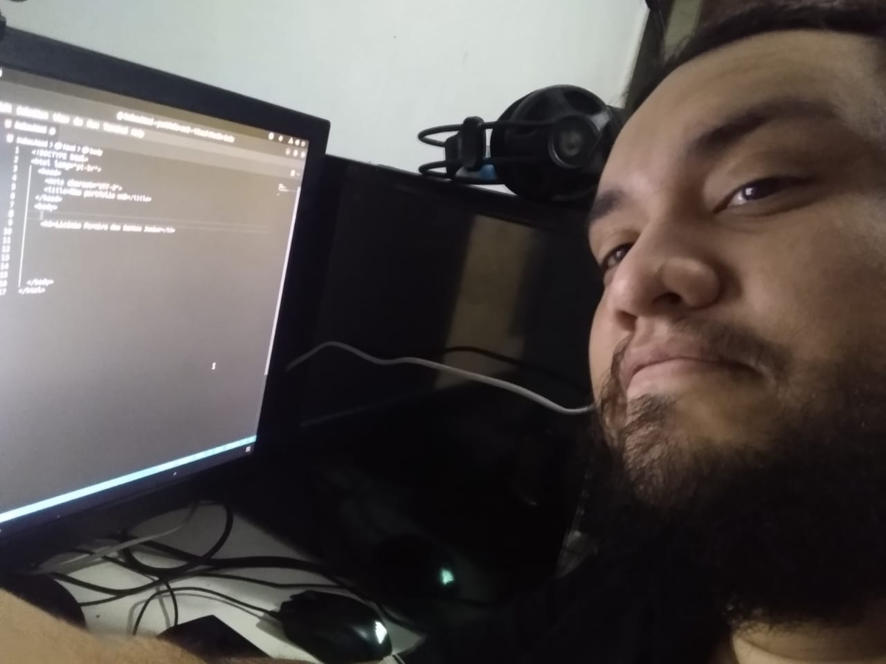

Licínio Pereira dos Santos Junior

Estudante de Desenvolvimento web da Trybe
Um pai nerd bobão adorador de gatos que codava por hobbie e agora quer ganhar algo por isso além de olhares estranhos. Brasileiro, Capixaba canela verde. (Vila velha - ES)
github
linkedin
Habilidades que me orgulho
Ótimo Tímido Decente Contador de histórias- Colaborativo
- Objetivo
Habilidades coletadas com o tempo
- Reparo e monatagem de computadores
- Html Iniciante
- Linguagem de programação C - Intermediario
- Conceitos básicos de circuitos integrados - Design - Montagem - Lógica booleana